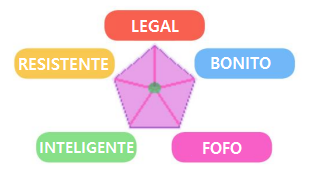
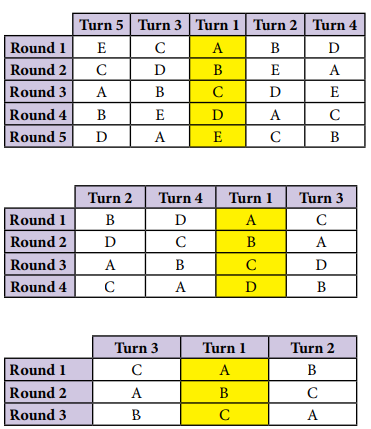

Capítulo Anterior: Combate
Pokémon Contest
Uma introdução aos Concursos
Os Concursos Pokémon são uma forma alternativa não violenta de esporte e competição da qual muitos Treinadores optam por participar. Esses Treinadores são frequentemente chamados de Coordenadores, e a Classe de Treinadores de mesmo nome foi criada para se especializar em Concursos Pokémon. As competições são realizadas diante de um público e de um painel de jurados que os competidores tentam impressionar fazendo com que seus Pokémon usem seus movimentos em performances deslumbrantes.
Circuito dos Concursos
Semelhante aos Ginásios Pokémon, muitas cidades têm Salões de Concurso onde os Treinadores se reúnem para competir em Concursos Pokémon. E da mesma forma que as academias costumam se especializar em um tipo de Pokémon, um Contest Hall específico pode atender a um tipo de concurso específico – seja Belo, Legal, Fofo, Inteligente ou Resistente. Muitas salas de concurso, entretanto, hospedam concursos de todos os tipos.
Ganhar um concurso recompensa um treinador com uma fita, e uma fita de um salão de competição de prestígio geralmente tem o mesmo peso que um distintivo de ginásio na demonstração das proezas e habilidades de um treinador. Muitos líderes de ginásio também são coordenadores famosos.
Assim como os Ginásios, os Contest Halls são organizados em um Circuito de Concurso, e muitas vezes há grandes eventos chamados Grandes Festivais, semelhantes a um torneio da Liga Pokémon, que exigem um certo número de Fitas, geralmente cinco, para que um Treinador se qualifique para competir.
Diferenças entre as Batalhas
Assim como nas Batalhas Pokémon, os Movimentos de um Pokémon são suas principais ferramentas nos Concursos Pokémon. Ao contrário das batalhas, no entanto, os Pokémon que competem num Concurso não pretendem lutar entre si (exceto talvez em certos formatos de Concurso não tradicionais!), mas em vez disso usam os seus Movimentos para dar um espectáculo, como criar fogos de artifício com Movimentos do Tipo Fogo. .
Preparar um Pokémon para um Concurso geralmente é bem diferente de prepará-lo para uma batalha. Alguns movimentos que podem não acrescentar muito ao arsenal de batalha de um Pokémon podem complementar muito bem seus outros movimentos em efeitos de competição. Enquanto os Battlers frequentemente buscam Vitaminas para melhorar as Estatísticas Básicas de seus Pokémon, os Coordenadores procuram Poffins para melhorar as Estatísticas do Concurso.
Pode valer a pena em campanhas onde as competições são proeminentes para um treinador criar Pokémon especificamente para essas competições, separado de sua equipe de batalha.
Estatísticas de Concurso
Os concursos Pokémon têm seu próprio conjunto de estatísticas; Legal, resistente, bonito, inteligente e fofo. Essas estatísticas são usadas para potencializar os movimentos de um Pokémon durante competições. Em vez de valores fixos, essas estatísticas são calculadas em dados; sempre um certo número de D6.
As cinco Estatísticas de Concurso se correlacionam diretamente com cinco das Estatísticas de Combate; Ataque para Legal, Defesa para Resistente, Ataque Especial para Beleza, Defesa Especial para Inteligente e Velocidade para Fofo. E assim como o Stat Ace é especializado em Combat Stat, o Style Expert é especializado em diferentes Contest Stats.
Além disso, cada estatística do concurso está aproximadamente associada a alguns tipos. Isso não significa que todos os movimentos do tipo associado corresponderão às estatísticas do concurso, mas geralmente uma grande proporção dos movimentos se alinham. Alguns Tipos estão associados a múltiplas Estatísticas de Concurso e alguns mais espalhados por todas as diferentes Estatísticas.
- A beleza é frequentemente associada aos tipos Fogo, Gelo e Água.
- Legal é frequentemente associado aos tipos Dragão, Elétrico, Lutador e Voador.
- Fofo está associado aos tipos Fada, Normal, Psíquico e Água.
- Inteligente está associado aos tipos Grama, Fantasma, Veneno e Psíquico.
- Resistente está associado aos tipos Lutador, Terra, Normal e Pedra.
Cada Estatística do Concurso tem duas Estatísticas Aliadas e duas Estatísticas Opostas. No gráfico a seguir, cada Estatística do Concurso é aliada às suas Estatísticas adjacentes e oposta às outras duas. Isso será levado em consideração nos concursos vinculados a uma estatística específica do concurso. A variante de concurso mais comum tem um tipo de concurso o tempo todo.
Os Pokémon podem ganhar estatísticas de concurso de duas maneiras principais: através de suas estatísticas de combate e comendo Poffins.
Para cada 10 pontos do Atributo de Combate correspondente, um Pokémon tem +1 Dado de Concurso no Atributo de Concurso correspondente, até um máximo de 3 em 30. Os Estágios de Combate nunca são levados em consideração.
As estatísticas do concurso também podem ser obtidas nos Poffins! Os Pokémon podem consumir 1 Poffin, mais um a cada 5 níveis que ganham, até um máximo de 6 Poffins no nível 25.
Cada Poffin aumenta uma estatística de competição em +1 dado. Poffins adicionais além do máximo de 6 não têm efeito.
Para usar suas estatísticas de competição conquistadas com dificuldade, ao usar um movimento da estatística de competição apropriada, você pode usar até 3 de seus dados de competição naquela estatística para adicionar a mesma quantidade de d6 a uma jogada de apelo. Depois que esses Dados forem usados, eles não poderão ser usados novamente naquela Competição.
Por exemplo, se você tiver um Atributo Legal de 4d6, ao usar um Movimento Legal você poderá adicionar até 3d6 ao Rolamento de Apelação. Na rodada seguinte, se você usar um Movimento Legal novamente, você poderá adicionar um máximo de 1d6, pois já usou 3d6 de seus dados de Estatística Legal. É importante cronometrar seus dados extras quando você achar que conseguirá aproveitá-los ao máximo!
Participando de um Concurso Pokémon
O primeiro passo para jogar um Concurso Pokémon é descobrir qual Variante do Concurso está sendo usada. Existem três variantes principais do concurso, mas você deve ficar à vontade para ter suas próprias ideias! Todas essas Variantes do Concurso operam com a mecânica padrão do Concurso e envolvem apenas Pokémon como artistas. No final das regras básicas do Concurso, forneceremos também algumas Variantes de Concurso não tradicionais, que trazem novidades como envolvimento direto do Treinador, integração com batalhas e outras ideias interessantes!
- Concurso Padrão: Um Concurso Padrão escolhe uma Estatística do Concurso – Legal, Fofo, Resistente, Beleza ou Inteligente – para ter como Tipo de Concurso o tempo todo. Normalmente, esses concursos são anunciados como 'Concursos legais' ou 'Concursos fofos' para que os participantes possam se preparar e dar o melhor de si naquela estatística específica do concurso.
- Superconcurso: Os Superconcursos são uma variante simples e divertida dos Concursos Padrão; em vez de ter um tipo pré-determinado, no início de cada rodada o Mestre decide aleatoriamente qual Tipo será o Tipo dominante naquela Rodada. Simplesmente role 1d6; 1 é Legal, 2 é Resistente, 3 é Beleza, 4 é Inteligente e 5 é Fofo. Role novamente em um 6.
- Festival: Um Festival é uma competição muito intensa com muitas rodadas a mais que o normal! Basta jogá-los como um Concurso Padrão ou Super Concurso até o final – subtraia Fumble do Apelo como de costume, então, o participante com a menor quantidade de Apelo é eliminado, e o Concurso começa do início com um participante a menos! O recurso é transferido entre cada 'Concurso'. Quando restarem apenas Três concorrentes, o Concorrente com mais Pontos de Apelo no final do Concurso é o vencedor!
Depois de determinar qual Variante do Concurso está sendo usada e de fazer os preparativos, é hora de começar o Concurso! Os concursos ocorrem em duas etapas: a Etapa de Introdução e a Etapa de Performance.
Estágio de Introdução
Na Fase de Introdução, um Pokémon é enviado e o Treinador se apresenta e apresenta o Pokémon ao público! Cada Treinador escolhe Charme, Comando, Astúcia, Intimidação ou Intuição. Role 1d6 para cada graduação da Habilidade escolhida que o Treinador possui. Para cada dado que resultar em um número maior ou igual a 3, o Treinador ganha um dado em uma Estatística de Concurso que pode ser usado durante este Concurso, assim como os Dados de Estatísticas de Concurso de um Pokémon.
- Os testes de Charme geram Dados Fofos
- Os testes de Comando geram Dados Legais
- Os testes de Astúcia geram Dados Inteligentes
- Os testes de Intimidação geram Dados Resistentes
- Os testes de Intuição geram Dados de Beleza
Os Treinadores que fizerem uma rolagem usando a Habilidade correspondente ao Estatuto de Competição de uma Competição Padrão iniciam a Competição com dois Pontos de Apelação bônus.
Treinadores experientes também fazem uso de Itens Retidos e Preparação que lhes permitem fazer testes adicionais para gerar mais Dados de Estatísticas de Competição da mesma maneira, com um dado sendo gerado por resultado maior ou igual a 3. Essas jogadas de bônus não precisam corresponder ao Tipo de Competição da Habilidade escolhida.
Pontos de Apelo
O Vencedor do Concurso é determinado por quem tiver mais Pontos de Apelo. Nos Concursos, você tem duas etapas diferentes para ganhar Pontos de Apelo; a Etapa de Introdução, a Etapa de Performance.
Durante cada estágio, você lançará muitos d6 para tentar ganhar Pontos de Apelo.
- Sempre que você rolar um 1, você não ganha Pontos de Apelo por aquela rolagem
- Sempre que você rolar 2, 3, 4 ou 5, você ganha 1 Ponto de Apelo por essa jogada.
- Sempre que você rolar um 6, você ganha 2 Pontos de Apelo por essa rolagem.
Esta é a regra geral, mas muda quando você é o centro das atenções.
Uma vez por competição, cada Pokémon estará no meio do cenário e será o centro das atenções. Esta rodada é importante porque oferece chances de muitos pontos – mas também de fracasso. Se você for o centro das atenções, marque pontos da seguinte maneira.
- Sempre que você tirar um 6, você ganha +3 Pontos de Apelo.
- Sempre que você tirar um 5 ou 4, você ganha +2 Pontos de Apelo
- Sempre que você tirar um 3, você ganha +1 Ponto de Apelo.
- Sempre que você obtiver um 2, você ganha 0 Pontos de Apelo
- Sempre que você obtiver um 1, você ganha 0 Pontos de Apelo e 1 Ponto Fumble.
Os Pontos Fumble são pontos negativos; no final de um Concurso, você subtrai quaisquer Pontos Fumble do seu Apelo Total.
Tensão
Há mais uma coisa para acompanhar durante os concursos – Tensão. A Tensão representa quanta atenção cada participante está atraindo do público. Manipular a tensão é importante para vencer concursos
Cada Participante possui um Medidor de “Tensão”, que começa em 0 e chega a um máximo de 5. A tensão é aumentada e diminuída por Movimentos ao longo do Concurso.
Para cada ponto de Tensão no início do turno, os competidores ganham +1d6 em seu movimento naquele turno.
Estágio de Performance
A Etapa de Performance é a parte principal de um Concurso e ocorre em um número de rodadas igual ao número de competidores. Quando a Etapa de Performance termina, os Pontos de Fumble são subtraídos dos Pontos de Apelo, e o competidor com mais pontos de Apelo é o vencedor!
No início da Etapa de Performance, cada Participante recebe uma letra (A a E se houver 5 participantes; basta ajustar as letras ao número de participantes). Essas cartas são retidas durante toda a duração do Concurso. As letras são atribuídas com base no número total de Dados de Estatísticas do Concurso ganhos na Fase de Introdução, do maior para o menor. Se um Treinador rolou uma Habilidade correspondente à Estatística de Competição em uma Competição Padrão, adicione dois ao total para fins de atribuição de letras. Se houver empate, basta jogar uma moeda.
Durante cada rodada do Estágio de Desempenho, cada Pokémon executa um Movimento de sua lista de Movimentos e usa seu Efeito de Concurso para ganhar Pontos de Apelo. Você não pode usar o mesmo movimento duas vezes seguidas durante uma competição.
Você não precisa prestar atenção às frequências normais de batalha para movimentos, pois seu Pokémon os usa para desempenho, em vez de executar os ataques seriamente.
Os movimentos são declarados na ordem dos turnos, especificada na próxima página, com base na posição dos competidores. Os movimentos podem afetar apenas Pokémon adjacentes a eles naquele turno.
Se um Movimento corresponder ao Tipo de Competição da Competição, o Movimento rola 1d6 adicional. Se o Movimento for de um Tipo oposto, ele rola 1d6 a menos (ou ganha um Ponto de Fumble se o Movimento não rolar dados). Se o movimento for do tipo aliado, nenhuma alteração será feita.
Por exemplo, em uma competição legal, usar um movimento inteligente ou fofo fará com que você jogue um dado a menos; se você não estiver jogando nenhum dado, você ganha um Ponto de Fumble. Usar um movimento resistente ou bonito não afetará seu teste. Usar um Movimento Legal adicionará +1 dado.
Ordem e Posição dos Turnos
A ordem e a posição dos turnos são informações táticas muito importantes durante as competições. A ordem do turno é determinada pela posição.
Lembra daquelas Cartas atribuídas aos Participantes no início da Etapa de Performance? Eles são usados para determinar a posição. Os gráficos abaixo mostram as posições para concursos de 5, 4 e 3 pessoas em cada rodada.
A cada rodada, basta alinhar os competidores e colocá-los no local que corresponde à sua letra.
A posição é importante porque você só pode afetar Pokémon adjacentes a você em cada rodada. Durante um Concurso, um Pokémon fica adjacente a outro participante exatamente duas vezes, independentemente do número de participantes.
A posição também é importante, pois quando você está na posição com a coluna amarela abaixo, você está no Centro das Atenção. Consulte a seção Pontos de Apelação para obter mais detalhes sobre como estar no Centro de Atenção.
A ordem do turno é determinada pela posição; veja os gráficos abaixo A linha superior designa qual competidor vai primeiro, depois o segundo, etc. Por exemplo, na primeira rodada de um concurso de 5 pessoas, o competidor A vai primeiro, depois o competidor B, depois o competidor C, depois o competidor D e depois o competidor E. Em na segunda rodada, o competidor B vai primeiro, depois o competidor E, depois o competidor D, depois o competidor A e depois o competidor C.
Tabela de Posições
Experiência de Contest
As competições exigem experiências e proporcionam experiência muito parecida com as batalhas! Conceda uma Experiência Pokémon como se ele tivesse derrotado X Pokémon do seu próprio Nível, sendo X igual à metade dos Pokémon que eles venceram no Torneio, arredondados. Observe que esta é uma exceção à regra usual de arredondamento! Use um Multiplicador de Significância relativamente baixo; talvez x1,5 ou 2. Você poderia ir mais alto se os Concursos forem ocorrências relativamente raras em sua campanha, ou se forem ocorrências muito comuns em sua campanha e este for um Concurso particularmente decisivo para a carreira de um Concorrente! Se você realizar um Festival, calcule a Experiência para o evento total, não para cada subcompetição.
Por exemplo, se um Pokémon de nível 10 ficar em 1º lugar em um concurso de 5 pessoas e o Mestre usar um multiplicador de significância de x2, ele ganhará 60 de experiência! Se ficassem em último lugar, ainda ganhariam 20 pontos de experiência.
Os Efeitos do Contest são os efeitos que cada ataque/movimento tem quando usado em um concurso. O efeito de cada ataque vem escrito na lista de movimentos. Confira abaixo a lista de todos os efeitos e o que cada um faz:
- Chamador de Atenção: 1d6 – Cada competidor adjacente perde até dois de Tensão; você ganha Tensão igual à quantidade perdida dessa forma.
- Grande Show: 1d6 – Você ganha +3 de Tensão
- Alcançando: 2d6 – Role +3d6 se todos os competidores adjacentes tiverem mais Pontos de Tensão do que você, e você ganha +1 de Tensão.
- Desespero: 5d6 – Todos os resultados de 1 concedem +1 Fumble, e todos os resultados de 6 concedem +1 Ponto de Apelo adicional. Isso se acumula com estar no centro das atenções.
- Tempo Duplo: Xd6 – Você perde 2 de Tensão. Role +1d6 para cada ponto de Tensão que os competidores adjacentes a você possuem, menos 1d6 para cada ponto de Tensão seu restante.
- Excitação: 3d6 – Você ganha +2 de Tensão
- Ato Exaustivo: 4d6 – Se você tiver 2 ou mais Tensão role +2d6; você então perde 2 de Tensão
- Aposta: 2d6 – Todos os resultados de 6 nesta rodada concedem a você +1 de Voltagem.
- Prepare-se: 1d6 – Você perde 2 de Tensão. Dobre o número de dados do seu movimento na próxima rodada. Os dados bônus das estatísticas e voltagem do concurso não são duplicados.
- Bom Show: 2d6 – Role +3d6 se todos os competidores adjacentes tiverem menos Pontos de Tensão que você, e você ganha +1 de Tensão.
- Incentivos: 3d6 – Se este Movimento corresponder ao Tipo de competição atual, você ganha 1 Tensão e cada Competidor adjacente perde 1 Tensão.
- Apelo Inverso: Xd6 – X é igual a 5 menos sua Tensão atual.
- Apelo Reflexivo: Xd6 – X é igual à sua Tensão atual.
- Confiável: 3d6 – Se você usou o mesmo Movimento no último turno, role +1d6 e ganhe 1 de Tensão. Movimentos com Confiável podem ser usados consecutivamente.
- Sabotagem: 3d6 – Todos os dados lançados nesta rodada não dão pontos; em vez disso, eles dão a todos os competidores adjacentes aquela mesma quantidade de Pontos Fumble.
- Opção Segura: 4d6 – Lançamentos de 6 durante esta rodada concedem apenas 1 Ponto, mas você não pode ganhar Pontos de Fumble rolando 1.
- Graça Salvadora: 1d6 – Você perde 1 Ponto de Fumble para cada nível de Voltagem que possui. Se você perder dois ou menos Pontos de Fumble desta forma, você ganha +1 de Voltagem. Você não pode ganhar Fumble com os movimentos do Competidor pelo restante da rodada.
- Não vi nada ainda: Xd6 – Você perde toda a Tensão. Para cada ponto de Tensão perdido desta forma, role +2d6.
- Atenção Especial: 5d6 – Cada competidor adjacente ganha 1 de Tensão
- Desempenho Estável: 5d6 – Você ganha +1 de Tensão
- Provocação: 4d6 – Todos os resultados de 5 ou 6 concedem apenas +1 Ponto; mas todos os resultados de 6 fazem com que cada competidor adjacente ganhe +1 Ponto de Fumble.
- Perturbador: 5d6 – Você perde 2 de Tensão e cada competidor adjacente perde 1 de Tensão.
Variantes não tradicionais de Concurso
Concurso Rotativo
Nem todos os concursos envolvem apenas um Pokémon por participante. Uma variante interessante do Concurso força um Treinador a atuar com um Pokémon diferente a cada rodada do Concurso, ou permite que uma Equipe de Treinadores compita cada um assumindo as rédeas de uma rodada do Concurso.
Eles são simples de executar. Antes do início do Concurso, um Treinador escolhe um número de Pokémon igual ao número de competidores no Concurso, se estiver participando sozinho. Uma Equipa de Treinadores deve ser composta por um número de Treinadores igual ao número total de Equipas concorrentes. Cada Treinador de uma Equipe escolhe um Pokémon que usará durante o Torneio.
Durante algumas Competições Rotativas, um Treinador ou Equipe pode escolher no início de cada rodada quem fará um Apelo, embora cada Pokémon só possa fazer um Apelo durante uma Competição. Em outras Competições de Rotação, você pode decidir que cada Equipe ou Treinador deve decidir a ordem em que seus Pokémon farão Apelos antes do início da Competição. O último caso é bastante interessante se cada rodada do Concurso apresentar uma Estatística de Concurso diferente e for prédeterminado qual Stat combina com qual Rodada.
A Etapa de Introdução de um Concurso funciona normalmente para um único Treinador. Eles escolhem uma Habilidade para rolar para ganhar Dados de Estatísticas de Competição. Em um Concurso de Rotação de Equipe, cada equipe escolhe um representante que faz uma rolagem para ela durante a Fase de Introdução.
O Estágio de Desempenho também funciona normalmente, com apenas a mudança de que a cada rodada um Pokémon diferente faz o Apelo. Há uma diferença crucial, entretanto, que é que um Treinador ou Equipe em uma Competição de Rotação não pode gastar mais do que um número total de Dados de Competição por Competição igual ao dobro do número de participantes na Competição.
Por exemplo, em uma Competição de Rotação de 5 Equipes, cada Equipe só pode gastar um total de 10 Dados da Competição durante a Competição. Isso ocorre porque, caso contrário, não há razão para cada Pokémon gastar o número máximo possível de Dados do Concurso em cada rodada, já que eles aparecerão apenas uma vez no Concurso.
Uma outra regra importante em um Torneio de Rotação é que qualquer pessoa com um Recurso que afete o Estágio de Desempenho de um Torneio pode usá-lo a qualquer momento, até mesmo para atingir o Pokémon de outro Treinador durante seu Apelo. Isso acontece mesmo que uma equipe tenha apenas um Coordenador ou Especialista em Estilo em uma Competição de Rotação, eles podem usar suas habilidades para beneficiar todo o grupo e guiá-los para a vitória.
Ao calcular os Pontos de Experiência para o Concurso, use o número total de Pokémon envolvidos no Concurso, mas um Treinador ou Equipe deve dividir essa Experiência igualmente entre todos os Pokémon usados no Concurso.
Concurso de Participantes Treinadores
Muitos Treinadores optam por aprender a lutar ao lado de seus Pokémon e também podem optar por trazer suas habilidades de combate para o Contest Hall.
Nesta variante do concurso, os treinadores podem usar movimentos para realizar apelos e também para seus Pokémon. Existem, mais uma vez, várias maneiras de implementar isso.
O mais simples é permitir que tanto o Treinador quanto o Pokémon realizem Apelos durante cada rodada de um Concurso. O jogador pode decidir se seu Treinador ou Pokémon realiza um Apelo primeiro durante cada rodada. Outra maneira é fazer com que o Treinador e o Pokémon se alternem para fazer apelos.
Usando o primeiro método, o Treinador e o Pokémon contam a Tensão separadamente, embora os efeitos que se referem a alvos adjacentes afetem tanto o Pokémon quanto o Treinador. Por exemplo, um Movimento Inquieto faz com que tanto um Treinador quanto um Pokémon adjacente percam 1 de Tensão. Você pode permitir certas interações entre os dois usando Efeitos de Concurso, como o movimento Prepare-se do Treinador, dobrando os dados do Apelo de seu Pokémon na mesma rodada, em vez de seu movimento na próxima, ou usando o Chamador de Atenção para transferir a Tensão do Treinador para o Pokémon.
Usando o segundo método, o Pokémon e o Treinador compartilhariam uma única pontuação de Tensão e ambos poderiam afetá-la com seus movimentos. Em ambos os métodos, o Treinador e o Pokémon compartilham um único conjunto de Dados de Estatísticas do Concurso, e um Coordenador ou Treinador com Características semelhantes pode usálos em si mesmo ou em seus Pokémon.
Battle Contest
Diferentemente da norma do Concurso, você também pode realizar Concursos que combinam habilidades de batalha e performances deslumbrantes.
Esta é uma boa oportunidade para permitir que Treinadores que tenham um leve interesse em Concursos, mas que estejam principalmente focados em batalhas, experimentem o Circuito de Competição sem se sentirem perdidos. Também é uma boa maneira de conduzir uma competição individual sem fazer com que os dois lados sintam que estão apenas jogando Paciência, sem interagir muito um com o outro.
O vencedor de um Battle Contest não é aquele que nocauteia todos os Pokémon do oponente. Em vez disso, no início de uma Competição de Batalha, os dois Treinadores concorrentes decidem quantos Pokémon cada um usará na Competição de Batalha, de 3 a 6. A Competição de Batalha dura um número de rodadas de combate igual ao dobro do número de Pokémon. os Treinadores decidem usar – então algo entre 6 e 12. No final da última rodada, ou quando todos os Pokémon de um Treinador são nocauteados, os Pontos de Apelo são somados e o Treinador com mais Pontos de Apelo vence o Concurso de Batalha.
A Etapa de Introdução de uma Competição de Batalha funciona da mesma forma que uma Competição normal; cada Treinador faz uma Verificação de Habilidade para gerar Dados de Estatísticas do Concurso, que qualquer um de seus Pokémon pode usar durante o Concurso de Batalha, embora isso não afete a ordem do turno ou a Iniciativa de forma algum
Obviamente, existem algumas diferenças nos Efeitos de Concurso que devem ser aplicados a um Concurso de Batalha. A ordem do turno é decidida pela Iniciativa como uma batalha normal, e o posicionamento também é diferente – todos os Pokémon oponentes no campo são contados como “adjacentes” para fins de Competição.
Também existem algumas regras especiais que afetarão a mecânica básica de combate. A Tensão é contada por Pokémon na equipe de um Treinador, e apenas a Tensão do Pokémon atualmente ativo se aplica a uma jogada de apelo. Sempre que um Pokémon nocauteia um inimigo com um ataque, ele ganha +2 de Tensão. Se um Pokémon for nocauteado por efeitos de dano ao longo do tempo, como Poison, Burn ou Hail, esse bônus de Tensão simplesmente vai para o Pokémon ativo atual do Treinador adversário. Sempre que um Pokémon é chamado de volta para sua Pokébola, ele perde 2 Tensão. Ser recuperado como resultado de Baton Pass, U-Turn e Volt Switch não aciona essa perda de tensão – isso inclui o uso de Recursos de Malabarista que executam um efeito semelhante a esses movimentos.
Sempre que um treinador tem um Pokémon nocauteado, o Pokémon que ele envia como substituto fica no centro das atenções no primeiro turno em que atua.
Em uma Competição de Batalha, é importante pesar os benefícios de nocautear inimigos rapidamente versus configurar combos poderosos com Efeitos de Competição e ganhar Voltagem. Os movimentos com os efeitos de competição mais úteis para uma determinada rodada nem sempre são aqueles com os melhores efeitos em batalha para a situação atual.
Há também uma compensação entre usar um Pokémon de forma consistente durante o Battle Contest e trocar com frequência. Manter um Pokémon afastado permite que o público o veja por mais tempo e permite que eles aumentem sua Voltagem de forma mais consistente do que se você estivesse trocando, mas pode abrir você para um inimigo explorando a Eficácia de Tipo. A troca consome turnos de Pokémon que, de outra forma, seriam usados para ganhar Pontos de Apelo, mas também pode permitir que você exponha uma variedade de Pokémon, cada um com seu próprio conjunto de Dados de Estatísticas do Concurso para usar durante o Concurso de Batalha. Mesmo assim, é comum em um Battle Contest um Pokémon ficar completamente sem uso devido ao número limitado de rodadas.
Também é possível usar esta variante de Competição para batalhas duplas ou triplas, mas lembre-se de que rolar Apelo além de Precisão e Dano já estende o tempo que as Competições de Batalha levam.
Estender isso ainda mais, introduzindo mais combatentes, pode não ser a melhor ideia!